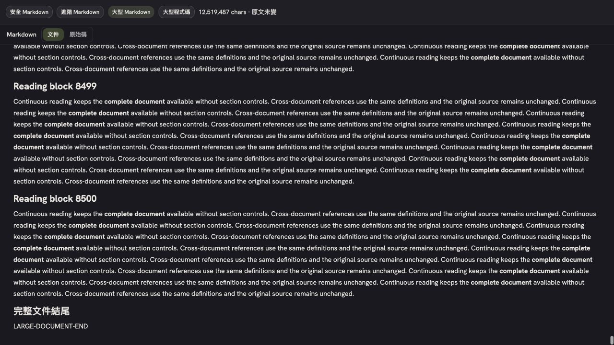
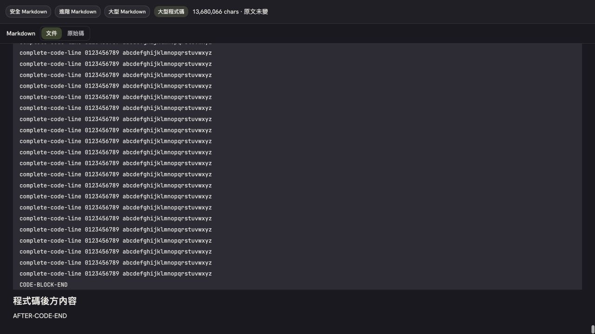
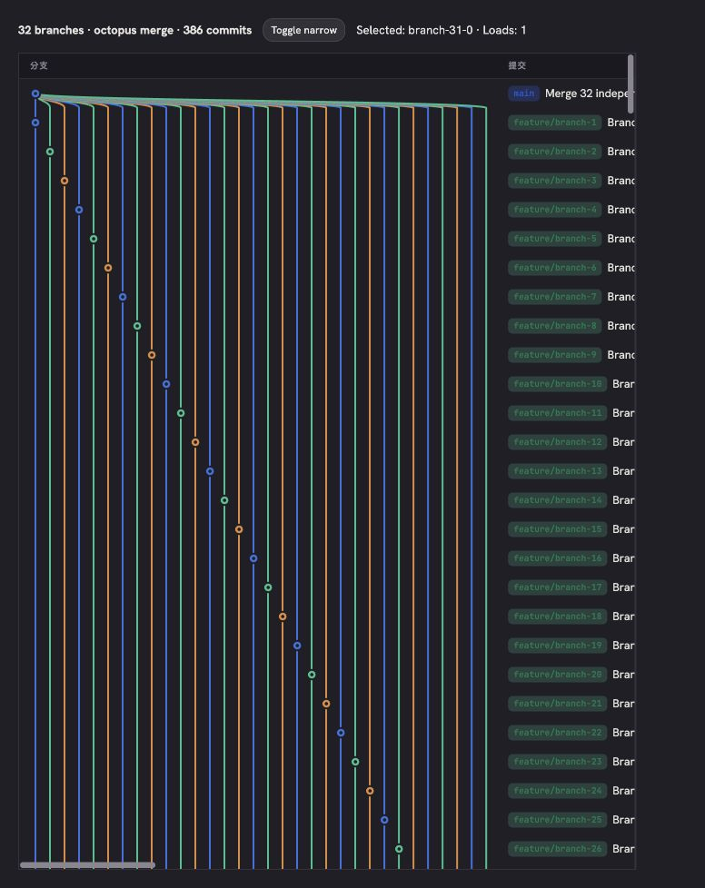
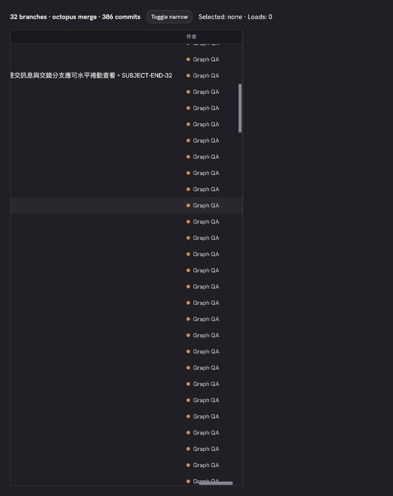
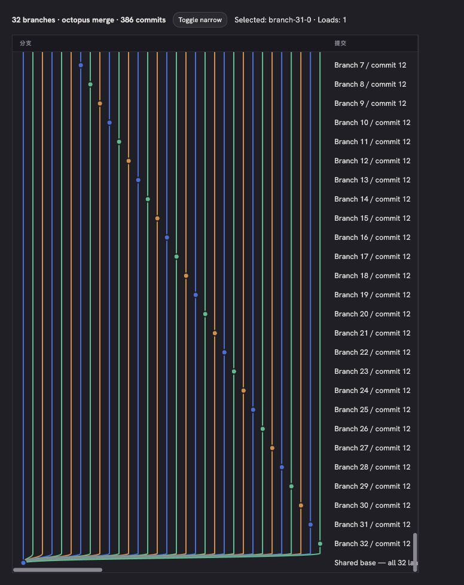
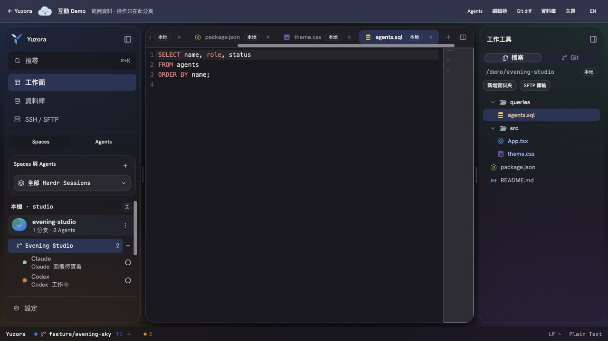
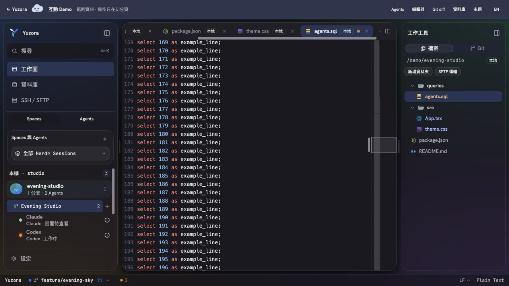
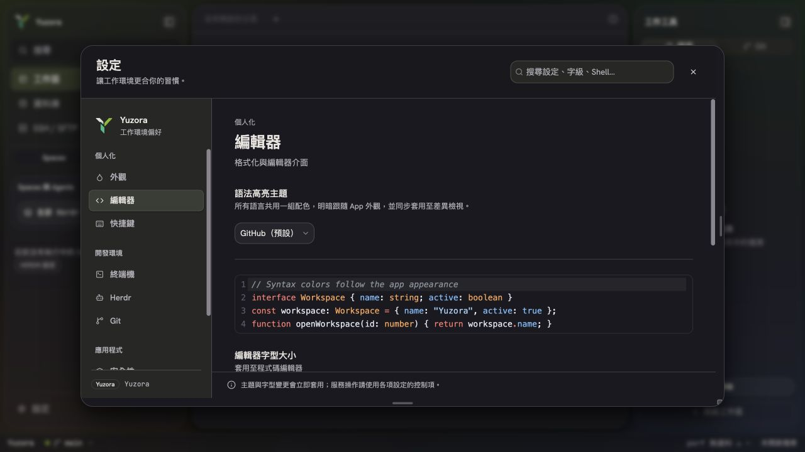
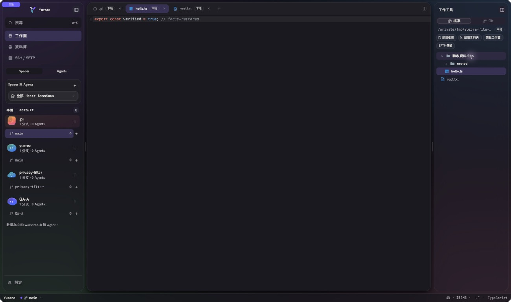
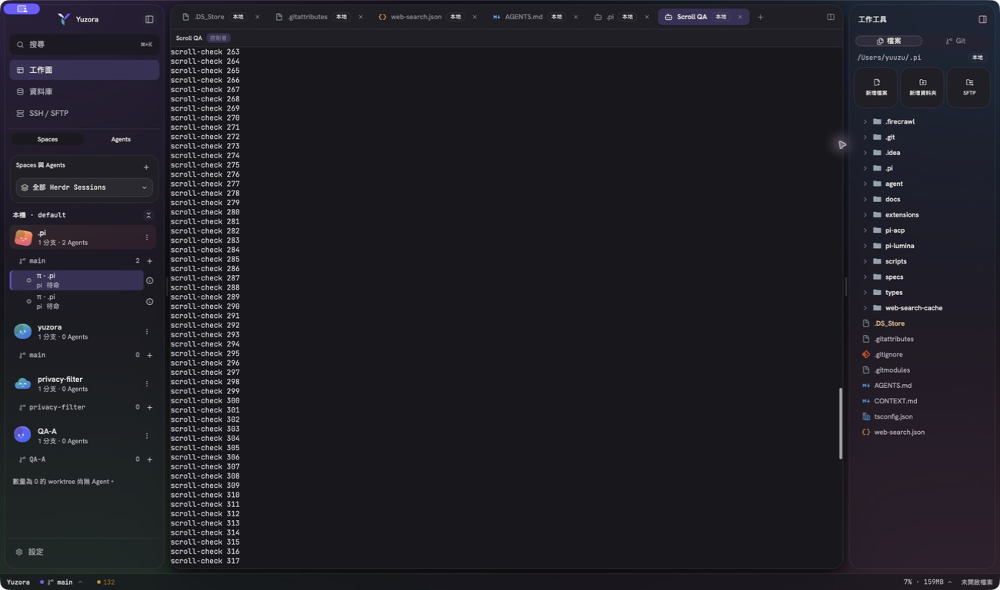

Yuzora · 2026-09-11 · Orchestrator / Astra subagents長時間使用問題：修復與驗收
整合原始 Bugs、Features、優化建議，以及後續加入的頁籤點擊、預發版更新、捲軸與 minimap 問題。語法高亮的重複需求合併為一項。
程式與本機主要驗收完成；Git 變更操作與遠端／Windows 完整流程待驗
最新追加：Markdown 無法富文字編輯時直接渲染
依最新要求，移除先前加入的「第幾段／上一段／下一段」與局部分段編輯流程。文件現在只有「文件｜原始碼」切換：可安全處理的普通 Markdown 維持整份富文字編輯；不支援的語法、唯讀文件或大型 Markdown 直接呈現完整、連續的閱讀畫面。
- 整份富文字上限為 128 KiB UTF-8；大小判斷先於解析，避免大型內容進入 Tiptap。含 HTML、圖片、參照定義等無法安全往返的文件直接渲染，不再提示其他段落可編輯。
- 大型閱讀在 Worker 中完整解析一次，保留全文件參照連結；依可視範圍掛載內容，離開畫面保留實測高度。背景批次不顯示成使用者的操作階段。
- 巨大程式碼區塊分批連續呈現，完整保留內容；沿用既有 sanitizer 與 HTTP(S) 連結開啟限制。
- CodeMirror 維持原文、儲存與復原的唯一來源；切到原始碼會卸載閱讀畫面，來源變更後以最新內容重建，切換文件不沿用舊 owner 或 worker 結果。舊段落索引與 Worker 已移除。
實際瀏覽器驗收：使用 production RichMarkdownEditor 與獨立記憶體檔案。HTML、表格及參照連結直接渲染到文件結尾，沒有段落導覽；普通文件仍顯示富文字工具列。12,519,487 字元 Markdown 可拖曳捲軸到 LARGE-DOCUMENT-END，末尾位於可視範圍；425 批資料在此時只掛載 1 批 HTML。13,680,066 字元單一程式碼區塊可拖到 CODE-BLOCK-END 與後方 AFTER-CODE-END，421 批資料只掛載 2 批 HTML。兩份文件均顯示原文未變。
驗證：6 檔、90 tests passed；typecheck 與 production build 通過。修改範圍 ESLint 0 errors／5 warnings（共享預覽檔的 mixed exports 與既有 effect 提示）；diff check 通過。Astra 獨立覆核確認來源切換、取消 Worker、完整參照與超大區塊。另以正式 Worker 驗證 13,050,056 字元、450,000 行程式碼，所有分批文字拼回後與原文完全相同。
範圍：單一巨大段落、清單、表格或 raw HTML 保持完整語法區塊，不截斷，但其渲染成本可能較高；既有整檔載入上限保留。獨立 Markdown Preview 分頁的降級與同步策略未改。本輪為前端驗收，未新增安裝包，也未操作任何真實 Git 或修改使用者檔案內容。
可重複驗收：http://localhost:1420/fixtures/markdown-reading.html（沿用 bun run dev）。使用者已操作的前景測試頁保留，主 agent 的背景頁驗收後關閉。記錄：/tmp/yuzora-markdown-reading-tests.log、/tmp/yuzora-markdown-reading-build.log、/tmp/yuzora-markdown-reading-lint.log。
不適合富文字編輯的文件直接渲染。
12.5 MB Markdown 全文結尾

13.7 MB 單一程式碼區塊結尾

追加：Git Graph 動態寬度與水平捲動
欄位維持「分支｜提交｜作者｜日期」。移除原本固定 72px 的 Graph 畫布及 layout 的 12 條 lane 截斷，現在依已載入歷史的實際分支數量計算寬度；新增分支與多路 Merge 都保留完整拓撲，不再設固定 lane 上限。
- 使用同一個 shadcn ScrollArea 提供水平與垂直捲動；表頭、Graph、提交訊息、作者與日期共用欄寬。表頭垂直置頂，水平位置與內容同步。
- 提交訊息、ref 與作者依全部已載入資料量測寬度，包含尚未捲到的列；水平捲動可讀到完整長訊息。窄視窗保持原寬，內容不會反過來撐大 viewport。
- 修正 Merge 父提交已佔用其他 lane 時遺失連線的情況。每個父提交都有從目前節點出發的連線；進入、穿越與離開列的線段分開繪製，連線正確穿過節點。
- 保留虛擬列表與歷史分頁。水平捲動不觸發載入；接近垂直底部才載入下一頁，同一頁只觸發一次。滑鼠與鍵盤仍可選取提交。
電腦／瀏覽器驗收：使用 production LogGraph 與獨立記憶體 fixture，包含 32 條分支、32-parent Merge 及 386 筆提交。Graph 寬 526px，32 個節點位置完整；窄 viewport 實測 457px，整體內容寬 3019px。拖曳水平 thumb 可到 scrollLeft 2562，垂直位置與載入次數保持不變。完整長訊息尾端 SUBJECT-END-32 可見且可點選，選取後捲動位置保留。
垂直捲動後表頭保持置頂；載入一次下一頁後，Graph 寬度仍為 526px，DOM 僅保留約 38–48 列。最上方 Merge 有 32 條 outgoing 連線，最底部共同祖先有 32 條 incoming 連線。驗收頁已關閉，原有開發服務保持原狀。
驗證：4 檔、71 tests passed，涵蓋 layout、renderer、LogTab 與 Git log store；typecheck 與 production build 通過，修改範圍 lint 0 errors，git diff --check 通過。Astra 獨立覆核另驗證 128 lanes 及 1000 組隨機 DAG 的 75,717 條 parent edges。建置仍有既有 bundle 大小與混合靜態／動態 import 提示；fixture 依既有 ESLint 設定被忽略。
範圍：動態寬度依目前已載入的歷史計算，更多歷史沿用既有分頁；此輪驗收不連線 Git、不執行 fetch、stage、commit、amend、checkout 或 push。這是前端元件的實際瀏覽器驗收，未新增安裝包。
可重複驗收：執行 bun run dev 後開啟 http://localhost:1420/fixtures/git-graph-wide.html。記錄：/tmp/yuzora-wide-graph-tests.log、/tmp/yuzora-wide-graph-build.log、/tmp/yuzora-wide-graph-lint.log。

依分支數動態延伸，32 條分支線完整顯示。
水平捲動至提交訊息尾端

32 條分支匯入共同祖先

任務拆分與目前結果
每組由 Astra 執行，主 agent 負責共用選單、頁籤整合、跨組檢查及總體驗證。以下列出實作方向；「待驗收」不代表已在使用者原環境重現或確認修復。
| ID | 需求 | 處理與驗收重點 |
|---|
| B1 | 切回視窗失去 focus | WorkbenchFocusBridge 依 DOM 與 Tauri 視窗事件恢復最後有效輸入面；保護 modal、表單與隱藏頁面。後續原生開發版已驗證 Editor → Finder → App 無須點擊即可繼續輸入；Terminal／IME 尚未驗證。 |
| B2 | Space 回到第一頁 | 同步 HERDR Space.activeTabId，按 host/session/Space 保存編輯頁面選取；補跨工作區 split、背景 snapshot 與交錯啟用測試。 |
| B3 | 上方頁籤水平位移 | 阻止一般垂直滾輪慣性帶動水平列；保留橫向手勢與 Shift+wheel；滑鼠聚焦使用 preventScroll。GUI 另發現新增 active tab 藏在右側，已補僅在 active 選取變更時露出完整頁籤。垂直／水平捲動、拖曳與 Badge 點擊通過瀏覽器驗收。 |
| B4 | Git fetch 後持續唯讀 | 修正 refresh 等候後續 watcher 無法結束 busy；成功發布完整狀態後解除等待，真正刷新失敗則保留錯誤、stale gate 與重試。 |
| B5 | WSL Explorer 無法開啟 | 專用 native boundary 驗 owner/generation/distro，Windows Shell 選取失敗時開啟實際資料夾；Unicode／空白／逗號不經命令列。Windows 真機待驗。 |
| B6 | 頁籤主機標籤點不到 | 「本機／Host」Badge 納入與名稱相同的啟用按鈕；關閉按鈕仍獨立。純 DOM 回歸已由失敗轉通過。 |
| B7 | pre-release 無法更新 | Auto／Stable／Preview 頻道、SemVer 排序、Tauri 簽章驗證；新 Beta 發布產生每版 metadata 與簽章資產。舊 Beta 需手動升級一次。 |
| F1 | 修改上次提交 | Amend 模式預填上次訊息、驗 HEAD、支援 staged 與純訊息修改；不自動加入 unstaged 內容、不 force push。實際 commit 未執行。 |
| F2 | 語言支援與配色 | 補 parser／副檔名映射；GitHub 預設、保留 Yuzora，另有 One 明暗配對；Editor／Diff 即時同步。完整盤點見下方。 |
| F3 | 快捷鍵設定 | 9 個 App commands 可搜尋、改綁、保存、復原；驗衝突、平台修飾鍵及 IME。CodeMirror／Terminal 局部原生快捷鍵另行保留。 |
| F4 | Git 檔案右鍵開啟 | 只開啟點選的當前 working-file；排除已刪除、過期、跨 repository 或歷史 revision。 |
| F5 | 複製完整路徑 | 檔案樹、檔案頁籤與編輯區可複製完整主機路徑；遠端不複製內部編碼的 document URI。 |
| F6 | 建立檔案／資料夾 | 工作工具已依參考圖改為單一卡片，頂部整合新增檔案／資料夾／重新整理圖示，並對齊收合按鈕；更多選單提供複製目前資料夾路徑與 Finder／Explorer 開啟。下方提供檔名搜尋與「檔案｜GIT」。開啟工作區入口維持移除。目錄右鍵可在該目錄建立檔案或子資料夾，對話框顯示目的地；建立後更新並展開檔案樹、新檔自動開啟。原生端已驗收成功。 |
| O1 | HERDR 頁籤效能 | 相同頁面重選消除無效 store 通知；100 次操作由 100 次通知降為 0。未將 RPC 延遲宣稱為已改善。 |
| O2 | Space 切換效能 | 保留 terminal mount，避免無效重選與背景頁面搶回；最新選取優先，過期非同步結果不能覆寫新選取。真實切換延遲待量測。 |
| O3 | Context-menu 範圍 | 底部列背景使用 App actions，分支區才提供 Git actions；Git file rows 綁精確檔案，提交文字框保留文字選單。 |
| O4 | Git 紀錄／分支圖返回 | 右卡 GIT 直接展開紀錄／分支圖，圖與提交詳情為可調分隔版面。僅保留「返回工作內容」；Files 也能回到原工作內容。 |
| O5 | Spaces | Agents 模式 | shadcn ToggleGroup 切換；Agents 模式僅顯示 Agent rows，保存偏好。 |
| O6 | Windows 重開機 WSL 恢復 | 已保存、已啟用的 WSL reconnect 使用既有 idempotent herdrStart，啟動 default server 後再發布連線。停止的 named Sessions 與原程序不假稱可自動重建。 |
| S1 | HERDR 缺捲軸 | 依官方 PaneScrollInfo 範圍與絕對 offset 控制捲動；補齊漏列的 pane.scroll capability，改為 shadcn 細捲軸。原生 400 行輸出已通過 track／thumb 實際驗收。 |
| S2 | Git diff 捲軸點不到 | 隔離 modal resize hit area 與 diff scrollbar，避免分割 handle 蓋住水平軌道；分割、整合、modal 的垂直 thumb 已實際拖動成功。 |
| S3 | 所有 overflow 可自由拖曳 | 共用 ScrollArea 擴大命中區並隔離手勢。GUI 發現設定視窗仍被 resize handle 遮住，已統一為所有可縮放對話框保留右／下 1rem 操作區；設定 thumb 拖曳、track 點擊及對話框寬度 resize 通過。 |
| S4 | Minimap 範圍與控制 | 從裝飾改為同步實際可見範圍，點擊定位與拖曳捲動，處理文件／視窗變化及事件清理；400 行文件已驗證 click、drag、viewport 框與原生編輯器捲軸同步。 |
語言與快捷鍵範圍
語法支援盤點
既有：JS／JSX／TS／TSX、Python、Rust、Markdown、JSON、HTML、CSS、YAML、SQL、XML、C／C++、Java、Go、PHP、Sass／SCSS、Less、Vue、Shell、TOML、Ruby、Swift、Lua、Perl、R、Dockerfile、Diff、Properties／INI。
新增：C#、Kotlin、PowerShell、Dart、Scala；使用既有 legacy-modes。補 mjs／cjs／mts／cts、pyi／pyw、markdown／htm／hh／hxx、XML 專案檔及常見 Shell／設定檔別名。
仍待需求選擇：Svelte／Astro／MDX、JSONC／JSON5、F#／Elixir／Erlang／Haskell／Clojure／Zig／Julia、Make／CMake／Nix／HCL／GraphQL／Protobuf。csproj／fsproj 為 XML 格式映射，不代表 F# 程式支援。
Parser 辨識語法，Theme 對語法角色配色；統一 GitHub 色盤不會自動補足缺少的 parser。本次不導入 LSP。
29 語言最新固定版驗收
以重建後的 production E2E bundle 實際載入 29 個語言樣本、57 個檔名／副檔名與 322 個 token probe；頁面顯示 29 / 29，所有樣本均能解析並套用基本角色配色（關鍵字、字串、註解、數值及適用的函式／型別／屬性／標籤）。檔名映射涵蓋 JavaScript、TypeScript、JSX、TSX、HTML、CSS、SCSS、JSON、Markdown、Python、Java、C、C++、C#、Go、Rust、PHP、Ruby、Swift、Kotlin、Dart、Shell、PowerShell、SQL、YAML、TOML、XML、Vue、Svelte。
驗收也明確標示語義限制：Java、C#、Ruby、Swift、Kotlin、Dart、Shell、PowerShell、SQL、YAML 為部分角色分類；Svelte 的 TypeScript、原生 CSS 與 template 通過，但 style lang="scss|sass|less" 尚無對應預處理器 parser。這些限制不影響副檔名辨識或基本高亮，已在機讀 corpus 與 UI 說明中保留，避免把一般定義／關鍵字誤報成完整函式／型別語義。
驗證：語法 coverage 回歸 86 tests passed；固定頁面與 Git／Markdown／Git Graph fixtures 同批重建成功。測試頁提供 GitHub、Yuzora、One 三組主題切換。
9 個可設定 App commands
命令面板、新終端、設定、側欄、Browser、ADE／Files／Git／Database。編輯器 save／search／history、Terminal 協定與 clipboard、Diff／TabBar 局部快捷鍵維持既有行為，設定頁說明目前範圍。
驗證紀錄
- 最新完整 Vitest：218 檔、2661 tests passed；先前兩個仍查找舊 UI 標籤的測試已改為 Files／GIT 契約後通過。
- GUI 前完整 Vitest：210 檔、2487 tests passed（包含滾動與 Space 回歸），記錄：
/tmp/yuzora-final-vitest.log。 - GUI 發現的 dialog 與 tab 修正後：5 檔、87 tests passed；記錄：
/tmp/yuzora-post-gui-tests.log。未把前後重複執行的測試數相加。 - 最後版本 bun run build passed（含 typecheck）；lint 0 errors、51 warnings。記錄：
/tmp/yuzora-post-gui-build.log、/tmp/yuzora-post-gui-lint.log。 - 原生 cargo build --locked --offline --bin yuzora、cargo check --locked --offline --all-targets passed；Windows Explorer API exact-source cross-compile 通過。Clippy exact baseline 匹配 90 diagnostics。
- Native updater 3 tests、HERDR scroll 2 tests、host reveal 3 tests 通過。Beta／Stable／version release contracts 與離線發布驗證 shell tests 通過。
Debug 安裝包前置 runtime:verify 停止：四平台本機快取仍為 0.0.9-beta.3，而 App 為 0.0.9。未略過驗證，未產生此輪可交付的 .app 安裝包。第一輪因 Mac 鎖定僅有瀏覽器證據；後續已使用編譯完成的原生開發 binary 補驗建立檔案、Editor 焦點及本機路徑複製，見追加紀錄。新 HERDR remote scroll API 的遠端使用需重建／部署對應 helper。
使用者已明確允許電腦／瀏覽器驗收，但不允許 Git 變更操作。因此 GUI 僅檢查 Git 閱讀、導覽、diff 與開檔；未執行 fetch／stage／commit／amend／checkout／pull／push，也未執行實際更新安裝。
第一輪瀏覽器驗收結果
此節記錄當時版本；最新介面與修正以文末追加修正為準。
使用 Computer Use 的 Codex In-app Browser，1280 × 720。正式前端為 localhost:1420；互動示範為本輪啟動的 127.0.0.1:4174。示範重用 production AppShell／編輯器／Diff 元件，但 Tauri 是記憶體 transport，不能替代原生 runtime 驗證。
| 結果 | 操作 | 實際證據 |
|---|
| 通過 | 設定捲軸 | 修正前 hit-test 命中 dialog-resize-handle，拖曳後 scrollTop 仍 0。修正後命中 scroll-area-thumb，拖曳 0 → 373，點軌道 373 → 0。 |
| 通過 | 多頁籤與 Badge | 5 個頁籤、可見寬 643px、內容約 902px；開啟右側新頁籤後 scrollLeft 225.5，active tab 完整可見。垂直 wheel 保持 225.5，水平向左到 0；Badge 點擊啟用 README，thumb 拖曳 0 → 259.5。 |
| 通過 | Git diff 捲軸 | 400 行示範文件：分割模式 scrollTop 0 → 7858；整合模式 0 → 3383.5；Diff modal 0 → 4080。右側 resize handle 能獨立調寬 1264 → 1092px。 |
| 通過 | Minimap 與 editor | 400 行文件，click 回到頂端、drag 到中段 scrollTop 3682；editor 原生 thumb 再拖至 5704，viewport 框同步。另保存中段定位 3537 的畫面。 |
| 通過 | 語法主題 | GitHub、Yuzora、One 的實際 CodeMirror token 色值改變；One 淺色模式同步更新。已恢復 GitHub 與跟隨系統外觀。 |
| 通過 | 快捷鍵 | Mod+Shift+B 與既有命令衝突時 Apply disabled；改 Mod+Shift+J 後可開命令面板，reload 後仍有效；已恢復 Mod+K。 |
| 通過 | 更新頻道 UI | 選「預覽版與穩定版」後 reload 仍保存，已恢復 Auto。修正殘留 stable-only 說明文案。未在 browser 觸發 native updater。 |
| 通過 | Git 閱讀導覽／選單 | 紀錄可返回變更清單與工作內容；Git 右鍵開啟 theme.css 後顯示對應編輯頁。status-bar 空白處為 App actions，分支區為 Git actions。 |
| 通過 | Agents 模式 | 切換後只顯示 Claude／Codex／Pi Agent rows，已恢復 Spaces。 |
| 後續補驗 | 複製完整路徑 | Demo 未實作系統剪貼簿；後續已在原生 App 複製並貼回驗證本機完整路徑，結果正確。 |
Demo 額外 48px toolbar 使大型 absolute DiffModal 底部超過 demo 視窗；已定位為示範頁容器與 window 高度差異。正式 AppShell 使用全視窗高度；未為示範限制改動產品 sizing 契約，原生底部 rail 仍待驗證。
已清除示範文件修改、恢復測試偏好並關閉本輪驗收頁籤；原先的 1420 開發服務保持原狀。
驗收截圖

新增右側頁籤自動露出；側邊欄已恢復 Spaces。
400 行示範文件，minimap 定位至中段並顯示可見範圍。
正式前端設定：內容捲軸與外側 resize rail 分離。追加：建立檔案／資料夾與原生驗收
已確認舊工具列的「新增資料夾」實際呼叫工作區選擇器；建立功能原先僅藏於空白區右鍵。當輪先將建立與開啟工作區區分，資料夾右鍵加入兩個建立入口；後續依最新要求改為三張動作卡片並移除開啟工作區。
- 工具列建立在工作區根目錄；資料夾右鍵建立在該目錄。沿用既有本機、WSL／SSH typed I/O，Windows 與遠端路徑不轉成顯示用字串。
- 成功後精確刷新檔案樹、展開目的資料夾，新檔案自動開啟。輸入名稱時切換工作區會取消；寫入已開始後才切換，完成結果不會搶走新工作區頁面。
- 原生開發版 GUI：建立中文資料夾、root.txt、驗收資料夾/hello.ts、驗收資料夾/nested，檔案系統檢查確認存在；hello.ts 可編輯並儲存。
- 重複建立 hello.ts 顯示「建立失敗／file already exists」，原有內容
export const verified = true; // focus-restored 保留。 - 同次補驗：Editor 切到 Finder 再 Raise App 後直接輸入成功；原生「複製完整路徑」貼入可取消的名稱欄，值正確為
/private/tmp/yuzora-file-creation.BkItk1/驗收資料夾/hello.ts，隨後取消而不建立檔案。 - 驗證：3 檔 117 frontend tests、3 demo filesystem tests、2 native filesystem tests 通過；production build（含 typecheck）通過、修改範圍 ESLint 無錯誤。對應記錄
/tmp/yuzora-create-integrated-tests.log、/tmp/yuzora-create-demo-tests.log、/tmp/yuzora-file-create-native.log、/tmp/yuzora-create-build.log。
此次 Mac 已解鎖。原生驗收使用指向已編譯 debug binary 的暫存啟動外殼「Yuzora Acceptance」與目前 Vite 原始碼，沒有略過安裝包 runtime:verify，也不代表可發布的安裝包已建置。實際測試檔案在獨立 /tmp/yuzora-file-creation.BkItk1，未建立 Git repository。使用者接手 App 時停止電腦操作，保留開發版及服務供查看。

原生開發版實際建立與儲存結果。
尚待驗證與具體阻擋
第一輪曾受 Mac 鎖定阻擋；後續建立功能已能進行原生驗收，Editor 焦點與本機路徑複製也已補驗。使用者接手 App 後已停止自動操作。
- 原生 Terminal／IME 切換應用後的 focus，以及更多設定／modal 焦點場景。
- 真實 HERDR：跨 Host／Session／Space 的最後選取、快速交錯切換、terminal mount 與延遲量測；遠端 server scroll thumb／track／回到底部（本機已通過）。
- Git diff 原生底部操作區與更多水平長行場景；遠端路徑複製與檔案建立真機測試。
- Windows／WSL 真機：已保存 Host 冷啟恢復，以及中文、空白、逗號路徑的 Explorer 選取／開啟。
- Git fetch／commit／amend 等有狀態變更的整合流程：依使用者最新指示不執行。
- 新 signed Beta 發布及可用的匹配版本 runtime payload 齊備後，才能確認真實跨版 OTA；本輪未發布、未安裝更新。
交付邊界
既有 336 個 docs/html 刪除保持原狀。未執行 git add／commit／push、建立 release、修改已發布 Beta／Stable assets、安裝更新或 force push。
macOS App 維持 Apple Silicon；遠端 Intel macOS Host 保留。舊 Beta 未編入 endpoint 且沒有簽章 metadata，需手動一次升級到新版本。WSL default server 自動啟動不代表重新建立已被作業系統終止的 Agent 程序。
此節保留前一輪驗收紀錄；工作工具的最新樣式見「參考圖卡片整合」。
追加修正：返回入口、工作工具卡片、Git 與 HERDR
使用者再次驗收後提出的四項調整，已分配 Astra 子代理實作，再由主 agent 執行原生驗收及整合檢查。
- Git 返回：提交紀錄／分支圖僅保留帶返回圖示的「返回工作內容」。移除「返回變更清單」按鈕，本地變更分頁仍保留。原生點擊返回後，回到原先的 Scroll QA 工作內容。
- 工作工具：移除「開啟工作區」入口，新增檔案、資料夾與 SFTP 改為三張圖示＋文字卡片，沿用 shadcn Card／Button。無工作區時停用兩個建立動作並提示從側邊欄選擇 Space。
- Git 抓取後唯讀：重現了抓取後 branches 首次讀取失敗、watcher 重試成功，但舊 lastError 仍導致 snapshotStale 的競態。status／branch 刷新錯誤分別追蹤；有效回應不因另一筆仍等待中的請求而被丟棄。交叉審查再補 foregroundError，保留真正的抓取／認證失敗，避免被無關刷新清除。原生當時的分支視窗沒有殘留錯誤；實際 fetch 未執行，因此未把 mock 結果宣稱為所有實機抓取流程已通過。
- HERDR 捲軸：根因是前一版漏把
pane.scroll 列入 App 的 implemented capability 清單，前後端因此一直停用捲軸。修復清單後改用 shadcn ScrollArea／Radix thumb，局部軌道寬度為 10px（依 UI 縮放顯示約 8–10px）；移除原先自製黑條。捲動位置仍由 HERDR server 決定。
原生驗收：主 agent 新建獨立的 Scroll QA shell，僅輸出 400 行 scroll-check。重建並重新啟動 App 後，捲軸從不可操作變為可操作；軌道點擊使位置由 347 → 48，畫面顯示第 48 行；拖曳至 263，再拖回 347 的最新輸出，終端內容同步更新、輸入焦點保留。原先滾輪路徑也可捲動。測試後已關閉僅本輪建立的 Scroll QA 終端。
驗證：主 agent 整合回歸 9 檔、192 tests passed（UI／Terminal 76、Git 116）；其他 Git 相鄰路徑 63 tests 亦通過。前端正式建置（含 typecheck）與 native debug binary 建置成功；lint 0 errors、51 個既有 warnings，Clippy 匹配 90 diagnostics baseline。新增 Rust capability 與 metadata 回歸另行通過。未執行任何真實 Git 抓取、簽出、暫存、提交或推送。
記錄：/tmp/yuzora-refinement-ui-terminal-tests.log、/tmp/yuzora-refinement-git-tests.log、/tmp/yuzora-refinement-build.log、/tmp/yuzora-refinement-lint.log、/tmp/yuzora-scroll-fix-native-build.log、/tmp/yuzora-scroll-capability-test.log、/tmp/yuzora-scroll-metadata-test.log。原生開發版已重新載入最後版本；WSL／SSH helper 須包含同一 capability 修正，才可驗證遠端捲軸。

原生開發版：真實 server 歷史內容、shadcn 細捲軸與三張工作工具卡片。